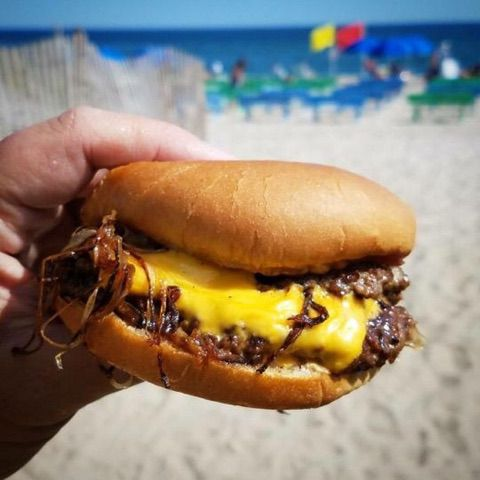

Smash Burger

The Ultimate Smash Burger
Credit due to the burger master himself, George Motts. This burger recipe uses his famous "Oklahoma Onion Burger Technique"
Ingredients (per burger)
- Ground Beef (80/20 preffered)
- Good quality burger buns
- Burger Sauce
- 2 slices of american cheese
- 1/2 Yellow onion (mandoline needed)
- Salt and pepper
Steps
- Slice onion through lowest setting on mandoline to make onion ribbons
- Make 2 5 oz meat balls with the groud beef
- Heat pan to med-high (cast iron definitely preffered
- Toast buns
- Once pan is piping hot, throw on meet balls and top generouly with onion ribbons
- Smash the meatballs, making them as thin as possible (parchment paper will help)
- Season with salt and pepper
- Flip burgers once they start to release from pan, and a good seared crust is developed
- Once flipped, add cheese to burgers
- Add sauce to both sides of bun
- Take off burgers and add to bun once cooked through and onions are caramalized. This bad boy's a double so buckle up.